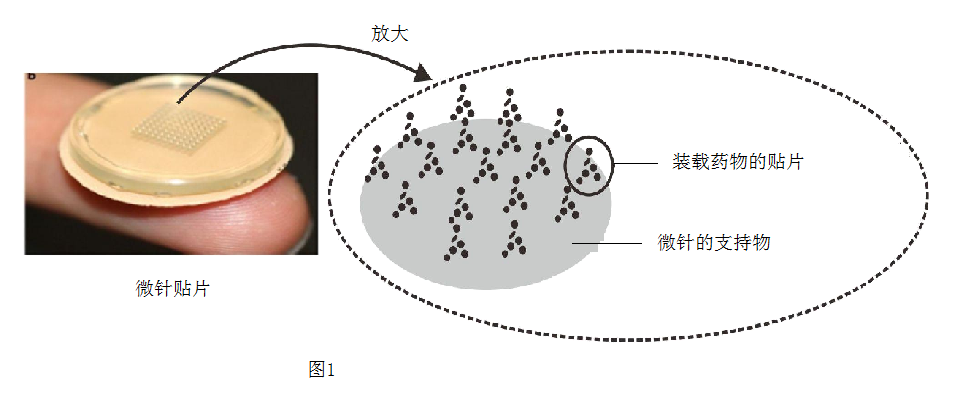
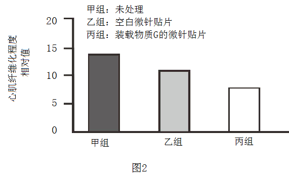

2023年北京中考生物 第30题
30. 有研究表明，可利用图1所示的微针贴片治疗心肌梗塞（简称心梗）引起的心肌纤维化。

（1）冠状动脉可为心肌细胞输送所需的营养物质和______（填气体名称）。心梗是由于部分心肌的血液供应受阻，引起心肌发生缺血性坏死，表现为过度纤维化，弹性下降。这会导致心肌有节律地______和舒张功能降低。
（2）科研人员利用微针贴片装载物质G，研究其对心肌纤维化的影响。
①影响微针给药量的因素包括微针______（填字母，多选）。
a．长度 b．表面积 c．在支持物上的分布密度
②对心肌纤维化模型鼠进行不同处理，结果如图2。据图2可知，物质G能够______心肌纤维化程度。为排除空白微针贴片 影响，评估物质G对心肌纤维化的作用应比较______两组的数据。
影响，评估物质G对心肌纤维化的作用应比较______两组的数据。

（3）微针贴片可通过微创手术直接送达心脏表面，贴于心肌纤维化部位。若将该技术应用于心梗患者的治疗，请写出其优势或不足：______（写出一条即可）。